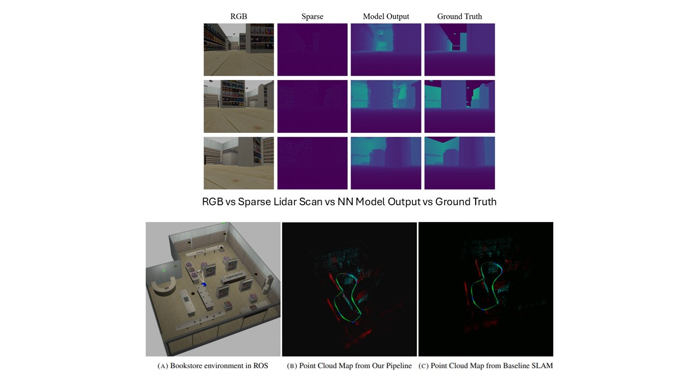
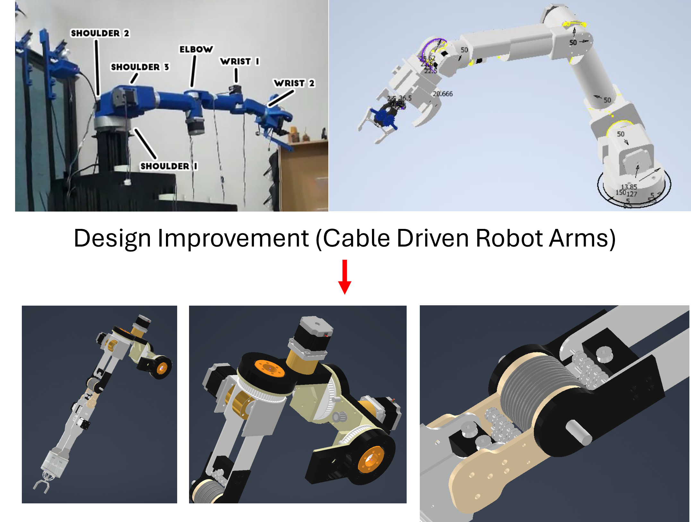
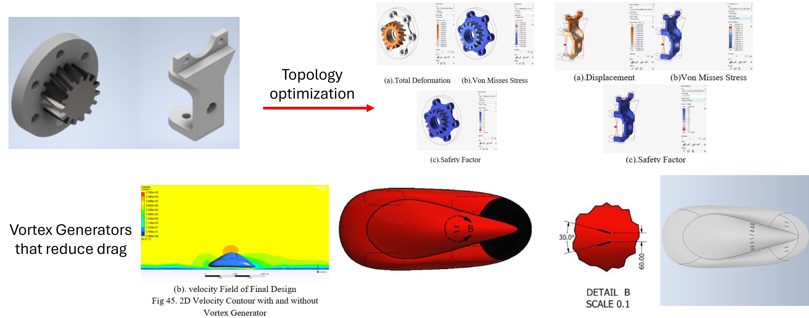

A Robotics Researcher with a focus on control systems,
particularly in the medical and construction industries. With a
solid background in industry and research, I am eager to
contribute to innovative projects that advance these fields.
My educational journey, which includes a cum laude degree in
Mechanical Engineering from the University of Indonesia and
advanced studies at the University of Pennsylvania, has given me a
deep understanding of engineering principles. This, combined with
hands-on experience in automation design for sectors like
manufacturing, automotive, and biomedical, allows me to bring
valuable insights and skills to complex engineering challenges.
Steerable Tape-Spring Needle for Autonomous Sharp Turns Through Tissue
Abstract
Steerable needles offer a minimally invasive method to deliver
treatment to hard-to-reach tissue regions. We introduce a new
class of tape-spring steerable needles capable of sharp turns
ranging from 15 to 150 degrees with a turn radius as low as 3mm,
which minimizes surrounding tissue damage. In this work, we derive
and experimentally validate a geometric model for our steerable
needle design. We evaluate both manual and robotic steering of the
needle along a Dubins path in 7 kPa and 13 kPa tissue phantoms,
simulating our target clinical application in healthy and
unhealthy liver tissue. We conduct experiments to measure needle
robustness to stiffness transitions between non-homogeneous
tissues. We demonstrate progress towards clinical use with needle
tip tracking via ultrasound imaging, navigation around anatomical
obstacles, and integration with a robotic autonomous steering
system.
Key Responsibilities
Developed a new class of tape-spring steerable needles capable
of sharp turns (15°-150°) with a minimal turn radius of 3mm,
reducing tissue damage in minimally invasive procedures
Derived and experimentally validated a geometric model for
steerable needle design
Evaluated manual and robotic steering of the needle along Dubins
paths in tissue phantoms simulating healthy and unhealthy liver
tissues (7 kPa and 13 kPa stiffness)
Demonstrated needle tip tracking via ultrasound, navigation
around anatomical obstacles, and integration with robotic
autonomous steering systems
Development of Passive Compliance Controller with Force Regulation
Background
The main challenge in contact-rich tasks is ensuring that the controller maintains compliance. In tasks such as insertion, where the end-effector must drag across a surface, force sensor measurements can become noisy. This noise can lead to unstable robot control. For example, if an external force suddenly pushes the end-effector from the right, the robot may retract to the left. However, in a constrained environment like a tight channel, this retraction could cause the robot to collide with the left side, triggering another reaction force that pushes it back to the right. This cycle can result in uncontrolled oscillations.
To address this issue, a passive dynamical system is implemented to dissipate energy and maintain passivity. The system continuously updates its damping matrix in real time, adjusting compliance in response to external disturbances. By controlling the eigenvalues of the damping matrix, the robot can regulate the applied force and maintain a steady interaction with the surface.
Key Responsibilities:
Developed passive impedance control with force regulation on Kuka LBR IIWA robot for contact-rich tasks
Developed and simulated tasks in ROS using Gazebo to optimize robot performance before real-world deployment
Integrated kinematics and path-planning with camera-based object detection for versatile task execution
Implemented energy tank concept to ensure controller stability for human robot collaboration
Employed learning algorithm (LPVDS) in Matlab to create a stable dynamical system based on minimum amount of demonstration (less than 20)
Implementation of Compliance Controller and Imitation Learning
for a 6 DOF Robot Arms for Building Bracket Installation
Background
This project consisted of two main tasks. The first was to migrate the force and compliance controller
from the UR20 robot arms to the FR20 robot arms and ensure they performed as effectively as the UR20 robots.
The second task was to develop an imitation learning model capable of automatically performing bracket
insertion given an initial position and an estimated goal pose. The main challenge in the second task was that
the perception system, which estimates the goal pose, introduced errors in orientation and translation. Therefore,
the imitation learning model needed to compensate for these errors.
Key Responsibilities:
Implemented compliance and force control on a 6 DOF robot arm
for tasks that require contacts and dragging such as channel
search, bracket alignment, and nut tightening/loosening,
improving installation precision
Tuned control gains (stiffness, PD, error scale), achieving a
95% success rate in bracket installation
Trained and developed an imitation learning model for automated
bracket insertion, achieving position and orientation RMSE of <
0.0001 from expert trajectories
Automated pipeline for automatic bracket insertion data
collection for model training purposes
Prepared both the software and hardware for robot operation,
including launch files, controller gains, URDF, FT-sensor mount,
pneumatics wiring, and microcontroller and PCB wiring
Implementation of Depth Estimation Network for Monocular Camera
with Sparse LIDAR Data

Background
Final project of Upenn graduate level Learning in Robotics
Course
Key Responsibilities
Implemented a Neural Network to generate dense RGB-D depth
estimation images from sparse LiDAR scans and monocular camera
data
Enhanced the accuracy of RGB-D SLAM by integrating deep
learning-based depth completion techniques
Evaluated the depth completion model and SLAM pipeline using
diverse real-world datasets (KITTI, TUM), and created
environment improving generalizability and robustness
Control and Optimization of FRANKA EMIKA (Panda) Robot Arm
Background
Final project of Upenn graduate level robotics course (MEAM5200)
Key Responsibilities:
Used Robot Operating System (ROS) and Python to control and
simulate the movement of the Franka Emika (PANDA) robot arm
Developed code for kinematics and dynamics control of the robot
(Forward Kinematics, Inverse Kinematics, Velocity Control,
Position Control)
Developed path planning algorithm to execute secondary tasks on
top of a main task (Bidirectional RRT, Artificial Potential
Field)
Integrated camera-based object detection technique with
developed kinematics and dynamics algorithm for pick and place
tasks
Development of a 4-Wheeled Mecanum Drive Mobile Base
Background
Final Project of Upenn graduate level Mechatronics Course
Key Responsibilities:
Developed WiFi-based control and localisation via ESP32 and
maintained system responsiveness and reliability
Employed I2C protocol for sensors and ESP-NOW for wireless
board-to-board communication to reduce physical connections in
electrical assembly by 80%
Utilized Solidworks, Autodesk Inventor, and Draftsight to
prepare design drawings and files for manufacturing
Soft Actuator & Variable Stiffness Link
Abstract
With the increasing demand for robots, their development has reached an all-time high. However, most robots
currently being developed are rigid and constructed from hard materials. While this type of robot excels in
precision and movement speed, it requires a complex control system to ensure smooth and accurate operation.
The primary drawback of rigid robots is their inability to handle fragile objects safely. Additionally, rigid
robots are often unsuitable for collaborative environments involving humans due to the hardness of their materials,
which poses safety risks.
To address these limitations, a pneumatic-based soft robot using silicone as the primary material was developed.
This type of soft actuator has previously been created by researchers at Harvard University as a grasping mechanism
for hand rehabilitation. In this study, the design of the soft actuator is modified to enhance the force it can generate,
enabling its use in actuating an elbow mechanism. Furthermore, a variable stiffness link is developed, allowing the stiffness
of the soft robot system to be adjusted as needed.
The goal of this research is to produce a soft actuator capable of generating greater lifting force than its predecessors,
making it suitable for moving a jig that simulates an elbow mechanism.
Key Responsibilities:
Design of soft actuator & Variable stiffness link that can
generate 9N lifting force at 37 kPa
When stiffens, the system provides stiffness up to 3x compare to
its relaxed state
These images illustrates the design, the actual soft actuator,
and the jig used to test the lifting force of the actuator
Redesign of a Cable-Driven Teleoperated Robot Arm

Key Responsibilities:
Cable Drive is used to reduce the moment of inertia of the robot
arm
The motor can be placed closer to the fixed support (shoulder)
Less material is needed on the lower arm of the robot reducing
the overall weight of the robot arm
The pulley mechanism on the elbow increases torque by 20 x
Shell Eco Marathon Virtual Offtrack 2021

Key Responsibilities:
Increased fuel efficiency by reducing component's weight and
optimizing flow around the car prototype
Utilization of topology optimization to reduce components’
weight (54% mass reduction on average)
Vortex generators as passive flow control to reduce drag in the
car by 14.74%
Development of a High Torque and Self-Rechargeable Conversion
E-bike with Knockdown System
Key Responsibilities:
Developed a high torque mountain bike conversion with pinion and
pulley system (increased torque by 8.75x)
Won the best presentation at INSITEF 2022 conference (the 3rd
international science and technology fair in conjunction with
the 3rd mechanical engineering joint symposium)
Steerable Tape-Spring Needle for Autonomous Sharp Turns Through
Tissue Omar Abdoun, Davin Tjandra, Katie Yin, Pablo Kurzan,
Jessica Yin, Mark Yim bioRxiv 2024.09.22.614377; doi:
https://doi.org/10.1101/2024.09.22.614377
Development of a Soft Actuator and Variable Stiffness Link
Tjandra, Davin (2022). Pengembangan Soft Actuator dengan Variable
Stiffness Link (Development of Soft Actuator Integrated with
Variable Stiffness Link) [Unpublished Bachelor’s Degree Thesis,
Universitas Indonesia]
E-Bike Conversion Patent
Davin., Mughni, M. I., Dani, K. D., Lianto, A. E., Dhelika, R.
(2021). Sepeda listrik berbasis konversi dengan fitur torsi
tinggi, pengisian daya dari gerak putar roda, dan sistem lepas
pasang (high torque and self rechargeable conversion e-bike with
knockdown system). Berita Resmi Paten Sederhana Seri-A (Indonesia
Serie-A Patent-S00202111212)
https://dgip.go.id/uploads/berita_resmi/file/697e9c08a34dd5b0f49310c339c5e648.pdf
(page 29)